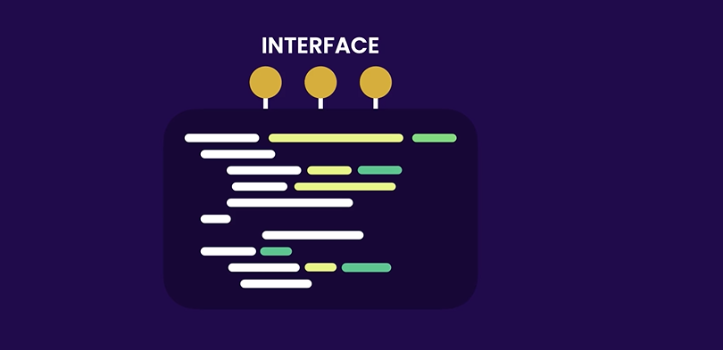
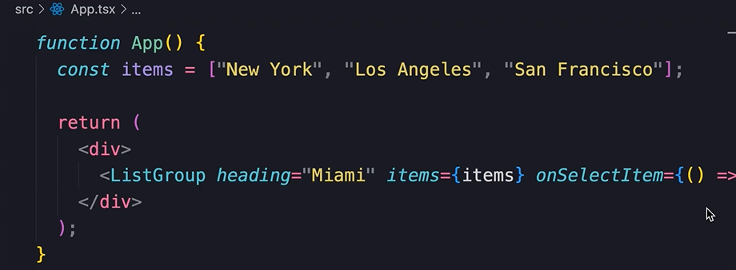

HOME
Separation of Concerns
Important Design Principal in Software Engineering
The principal states that we should divide a program into distinct
sections where each section handles a specific functionality, rather
that having everything in one place.
The Benefits
- Modular
- Easier to understand
- Easier to maintain
- Easier to modify
Modularity also provides the ability to develope and test components
independently.
This makes it easy to use them again in another program.
Modular Programs
In modular programs each module is responsible for a separate concern.
Similar to how, in a workplace, each person has their own job.
For example, the crane operator only operates the crane, and only the
workers bolt in the steel.
In a module all the complexity, and implementation detailes is hidden
behind a well defined interface

An analogy
Think of the remote to a tv.
The remote has a fair amount of complexity to it, but all that is
hidden behind easy to use buttons.
Those buttons represent the interface of the remote control.
Building them with this approach will make our components easier to
use in other programs.
The disagreement
Some people argue that CSS-in-JS violates the separation of concerns
principal, because we put everything in the same file.
But thats not the idea.
Separation of concerns doesn't dictate whether everything should be in
one file or multiple files.
Instead it emphasizes that different sections or modules in a program
should handle specific functionalitys, and all the complexity around a
specific funtionality is hidden behind a well defined interface.
A practical example
In our ListGroup component we have hidden the complexity by creating
the props, like heading, items, onSelectItem.

The props are like the interface of a remote.
It makes the component easy to implement, and re-use after being
built.